A production-style GitOps platform, built from bare VMs on one laptop
A kubeadm Kubernetes cluster, provisioned with Ansible, delivered by Jenkins and Argo CD, and watched by Prometheus and Grafana. Push to Git, and a new version is live minutes later.
- Kubernetes
- kubeadm
- Ansible
- Jenkins
- Argo CD
- Docker
- Trivy
- Prometheus
- Grafana
- KVM
- Flannel
- v1.35.9
- Kubernetes via kubeadm
- 2
- KVM VMs on one server
- 0
- manual kubectl applies per release
- 1.5-3 min
- commit to image
Architecture
One old laptop runs the CI tools and two KVM VMs that form the cluster. Everything sits on a private network.
Jenkins only builds and pushes. Argo CD is the only thing that changes the cluster. Open the diagram full size. To reach Grafana and Argo CD from my PC, a port-forward on the VM is relayed by socat twice to a LAN address.

Pipeline
Jenkins does CI, Argo CD does CD. A [ci skip] commit message and a changelog check stop the pipeline from triggering itself.
- git pushto main
- Jenkinsbuild and Trivy scan
- Push imagemk0230/shopapp:build number
- Commit tagmanifest,
[ci skip] - Argo CD syncauto-sync, self-heal
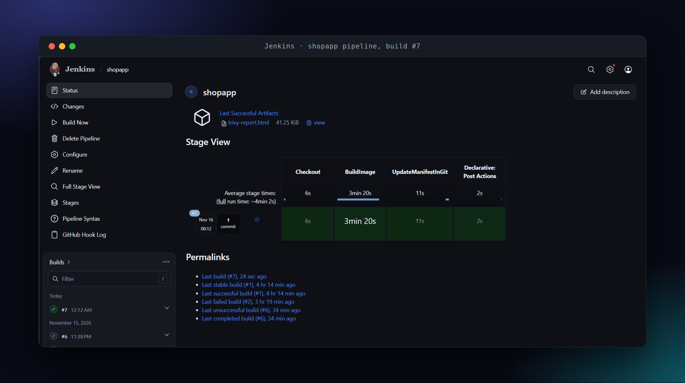
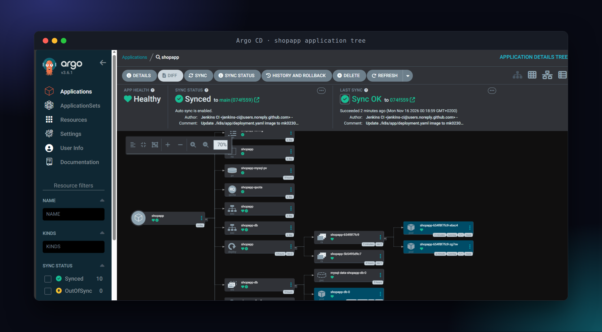
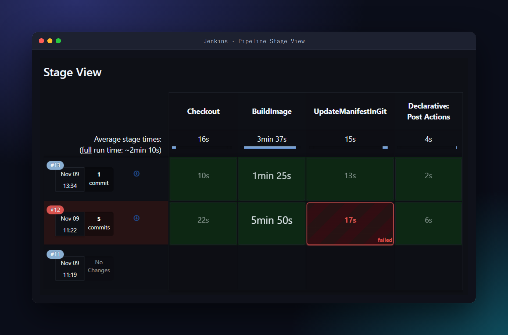
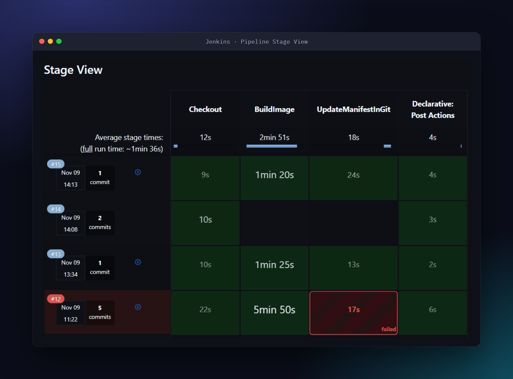
[ci skip] commit: only Checkout ran.Infrastructure as code
Two playbooks build the cluster and the CI server. No hand-run setup steps.
k8s-setup.yml
apt-upgradeon all nodesk8s-common: containerd, kubeadm, kubeletk8s-cluster-creationandkubectlon the control planek8s-cluster-joinon the worker- Label and taint the worker
jenkins-setup.yml
apt-upgradeon localhostjenkins: Java and Jenkinsdockertrivy
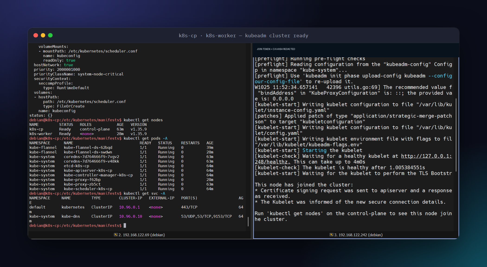
k8s-setup.yml: both nodes Ready on v1.35.9.Monitoring
kube-prometheus-stack (Prometheus v3.15.1, Grafana 13.3.0, node-exporter v1.12.1). node-exporter runs as a DaemonSet on each node and is scraped at node-ip:9100.
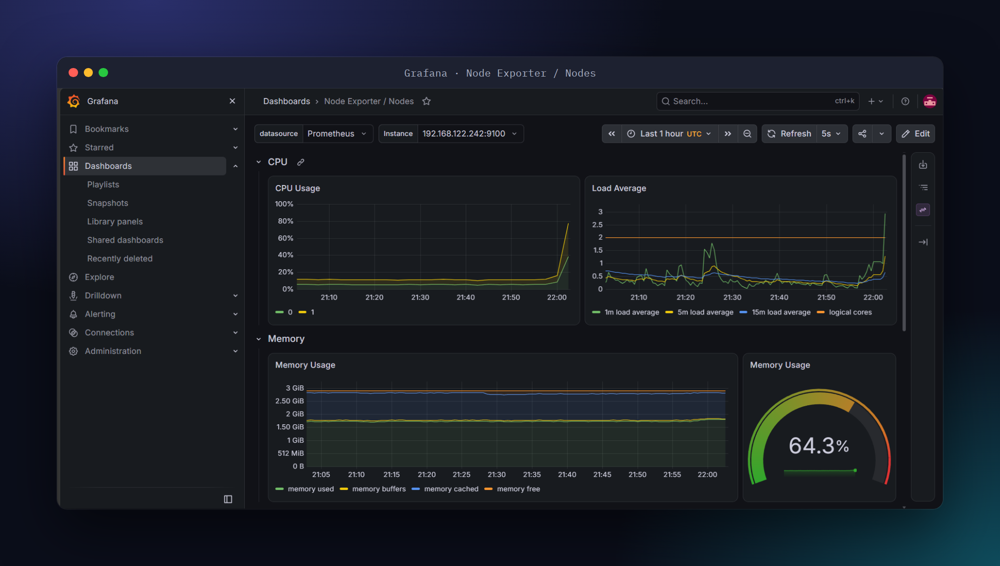
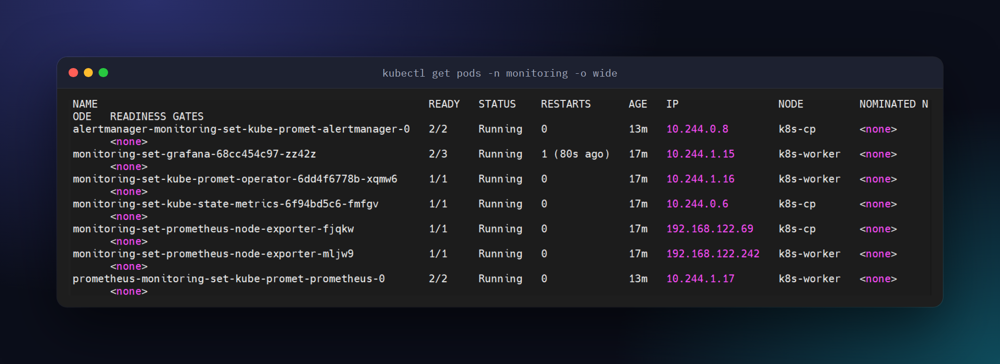
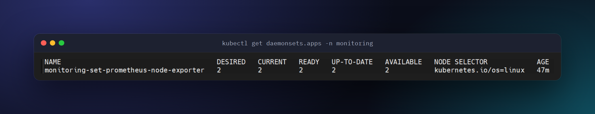
Application
shopapp: a small storefront (Node.js 22, Express, MySQL 8.4) deployed only through Git.
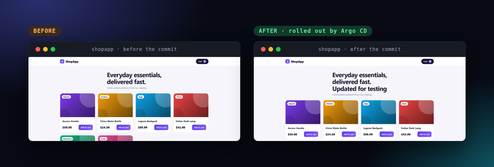
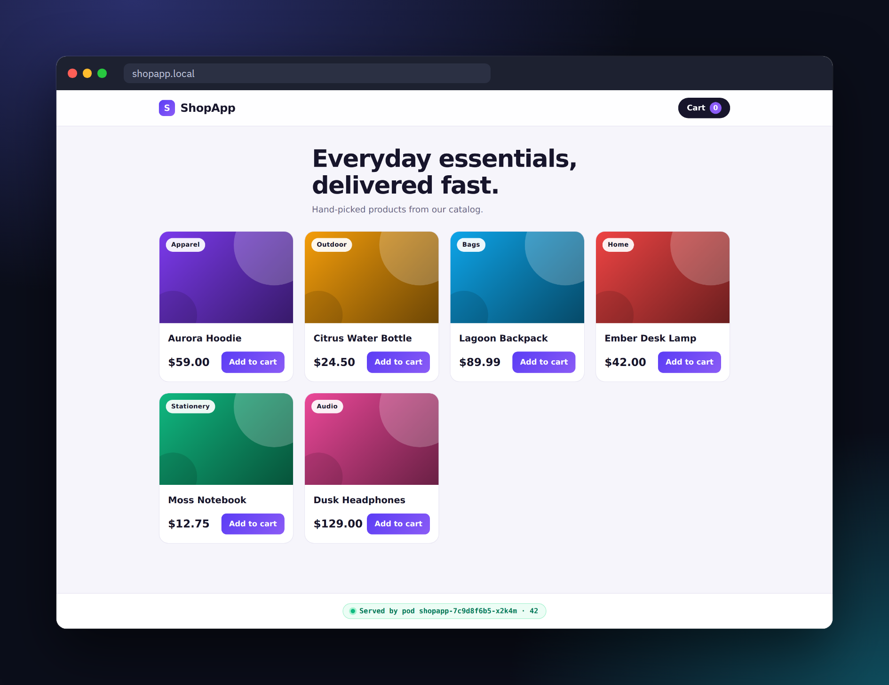
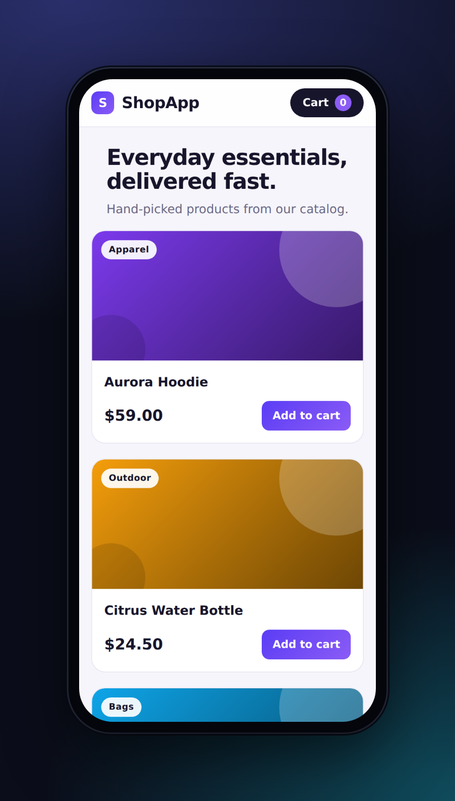
- Deployment shopapp x2: probes, requests and limits, non-root
- StatefulSet shopapp-db: MySQL 8.4 on a local PV
- Services: ClusterIP for the app, headless for MySQL
- NetworkPolicy: only app pods may reach MySQL
- ResourceQuota: caps pods in the namespace
- ConfigMap and Secret: Secret is created with kubectl, never committed
Troubleshooting
Three real problems and how they were solved.
App stuck at Init:0/1
- Symptom
- Argo CD Degraded; init container looped.
- Cause
DB_HOSTnamed a Service that did not exist.- Fix
- Use the headless Service name; the ConfigMap now lives in the Argo-managed path.
Rollout pod Pending
- Symptom
Insufficient cpuon the worker.- Cause
- Requests of 1 CPU and 1Gi per pod were too big for a 2 vCPU worker.
- Fix
- Requests 200m/500Mi, limits unchanged, quota raised to 4 pods.
Pipeline triggers itself
- Symptom
- Jenkins' own manifest commit could start a build.
- Cause
- The push trigger fires on every commit.
- Fix
[ci skip]plus a changelog condition per stage.